Neurogenesis, differentiation and neuronal survival
From neural progenitors to mature neuronal populations
Scuola di Psicologia, University of Florence
Development of neural circuits
At this point, neurons have been generated, differentiated, migrated to their appropriate regions, and selected for survival.
The next developmental problem is to connect them into functional circuits.
Circuit formation requires neurons to:
- extend axons toward appropriate targets
- recognize the correct cells and subcellular regions
- form and stabilize synapses
- eliminate inappropriate connections
- organize axons for efficient signal transmission
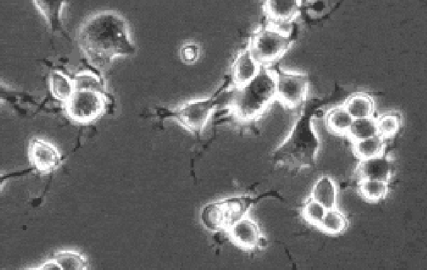
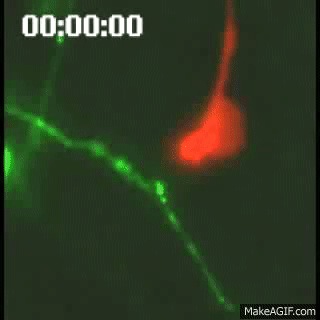
Three major phases
The formation of neural circuits can be organized into 3 major developmental processes.
1. Axon growth and guidance
Axons extend over (sometimes very long) distances and make a sequence of directional choices.
2. Synaptogenesis
Axons recognize appropriate targets and assemble functional synaptic contacts.
3. Myelination
Glial cells organize many axons into structures specialized for rapid and reliable conduction.
Building a circuit requires not only reaching the correct region, but also selecting the correct cell, the correct subcellular target, and the correct connections to maintain.
Axon growth and guidance
A differentiating neuron develops an axon that may have to travel a distance many times larger than the diameter of the cell body.
Axonal growth is a directed process.
The growing axon continuously samples its environment and changes direction in response to extracellular signals.
The structure that performs this exploration is the growth cone.
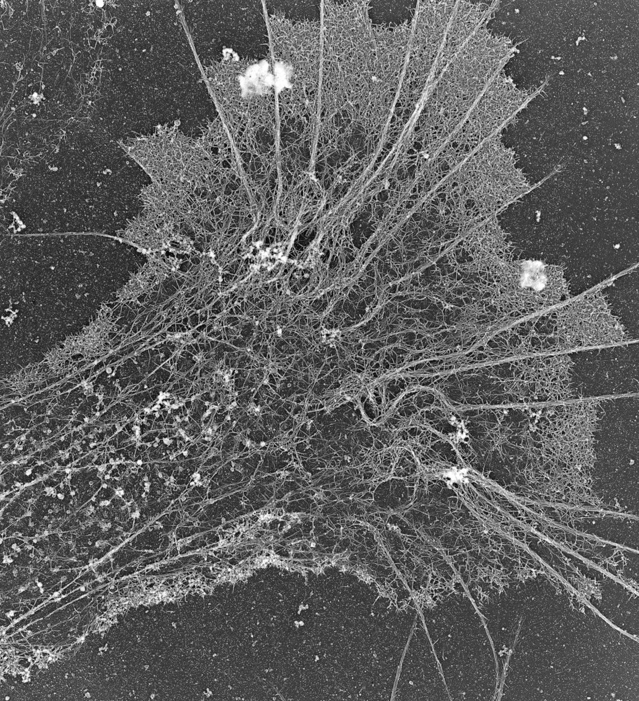
The growth cone
The growth cone is a highly dynamic structure located at the tip of a growing axon.
It contains:
- filopodia that explore the surrounding environment
- lamellipodia that extend and retract
- an actin-rich peripheral domain
- microtubules extending from the axon into the growth cone
Signals detected at the growth cone are translated into cytoskeletal changes that determine the direction of axonal growth.
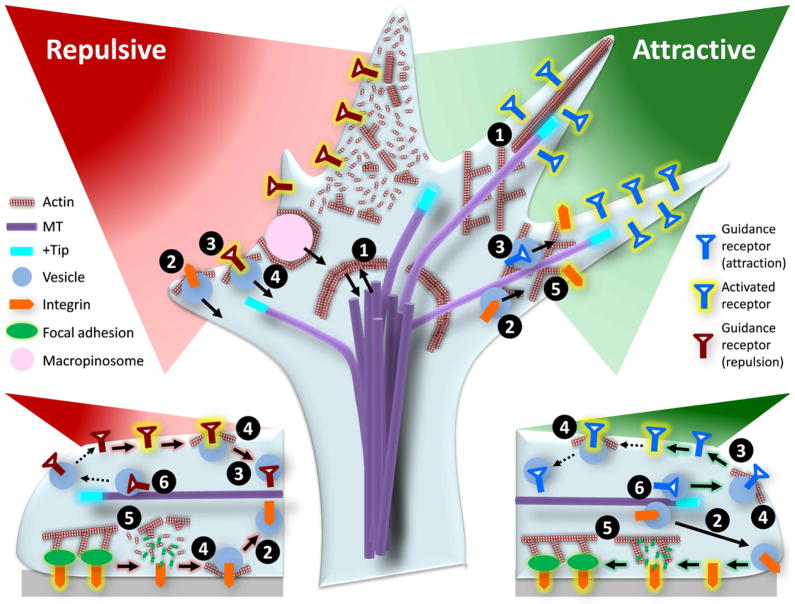
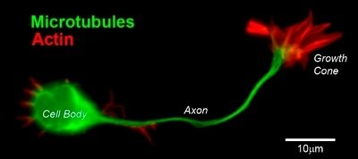
Axons do not find their target in one step
Axon guidance is a progressive and stepwise process.
A growing axon does not need to identify its final target from the beginning.
Instead, the growth cone encounters a sequence of intermediate cues and choice points.
At each stage it can:
- continue along a permissive substrate
- follow another axon
- turn toward an attractive signal
- turn away from a repulsive signal
- cross or avoid a boundary
local decision + local decision + local decision -> correct long-range connection
How does the growth cone make local decisions?
Extracellular matrix adhesion (Laminin)
Provides a permissive substrate on which the growth cone can attach and extend.
Cell-surface adhesion (NCAM)
Promotes adhesion between the growing axon and neighboring neural cells.
Fasciculation (Fasciclin)
Allows growing axons to adhere to and follow pre-existing axonal pathways.
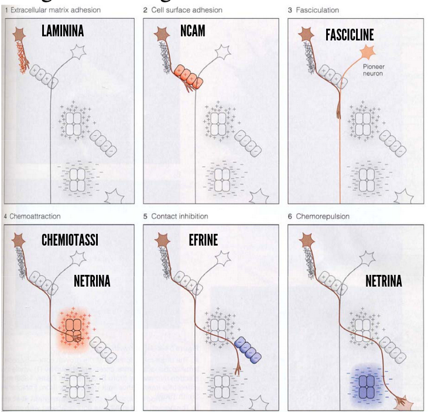
The final direction of axonal growth reflects the integration of multiple local signals, not the action of a single cue.
How does the growth cone make local decisions? 2
Chemoattraction (Netrin)
A diffusible cue that can attract the growth cone toward its source.
Contact-mediated repulsion (Ephrins)
Contact with ephrin-expressing cells can trigger growth-cone collapse or redirection.
Chemorepulsion (Netrin)
Depending on the competence of the growth cone, netrin can also act as a repulsive cue.
The final direction of axonal growth reflects the integration of multiple local signals, not the action of a single cue.
Sperry and the chemoaffinity hypothesis
Roger Sperry proposed that neurons and their targets carry molecular labels that help axons recognize their appropriate destination.
This became known as the chemoaffinity hypothesis.
The idea was developed from experiments on the visual system, where retinal axons form an ordered map in the optic tectum.
The hypothesis predicted that axons do not connect randomly and then become organized later.
They possess molecular information that biases them toward specific target locations.
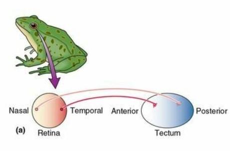
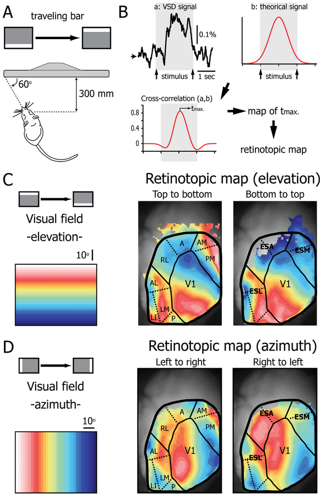
Sperry’s eye-rotation experiment
Regeneration of the optic nerve (1963)
Manipulation
The frog eye was rotated by 180°, the optic nerve was cut, and retinal axons were allowed to regenerate.
Observation
After regeneration, axons returned to approximately their original tectal locations.
Behavior
Because the eye had been rotated, the regenerated anatomical map produced systematically inappropriate visually guided behavior.
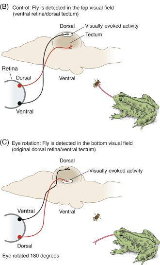
What Sperry’s experiment showed
Regenerating retinal axons did not simply connect to the nearest available tectal neurons.
They showed a strong tendency to return to their previous topographic positions.
This supported the idea that:
retinal position -> molecular identity -> preferred tectal position
The experiment introduced a central principle of circuit development:
connectivity can be specified by matching molecular information between projecting neurons and their targets.
Topographic maps
Many sensory and motor pathways preserve spatial relationships between neighboring neurons.
This organization is called a topographic map.
In the visual system, neighboring retinal ganglion cells project to neighboring regions of their central target.
The spatial organization of the retina is therefore transformed into a retinotopic map.
Topographic maps can be generated using graded molecular signals, rather than a unique molecular label for every single neuron.
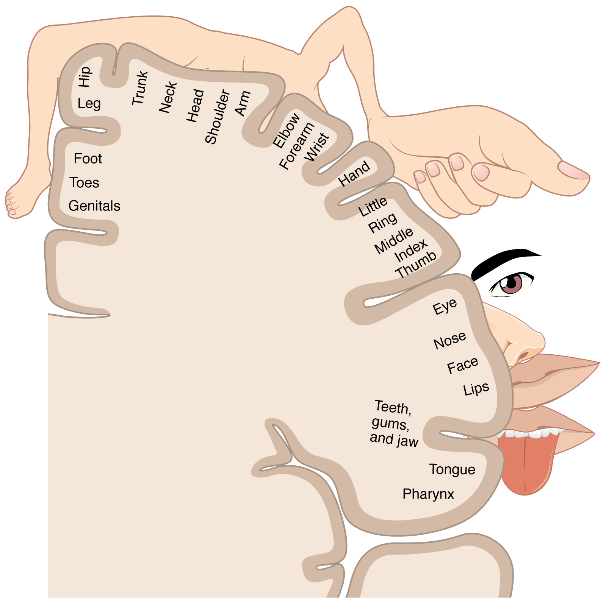
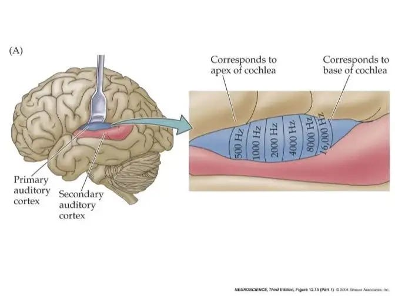
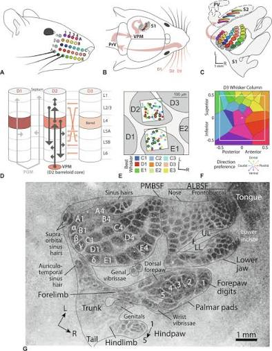
From labels to molecular gradients
Chemoaffinity does not require a different molecule for every possible connection.
A small number of molecules expressed as gradients can provide positional information.
Axons expressing different levels of a receptor respond differently to a gradient of its ligand in the target tissue.
This converts a continuous molecular gradient into an ordered pattern of connections.
This is conceptually similar to the morphogen gradients encountered earlier.
Eph receptors and ephrins
Eph receptors and their ephrin ligands are important molecular cues for the formation of many topographic projections.
In the retinotectal system, graded Eph/ephrin expression helps retinal axons distinguish different positions along the target.
For some retinal axons, increasing ephrin concentration acts as a repulsive signal.
Different levels of receptor expression therefore produce different preferred termination zones.
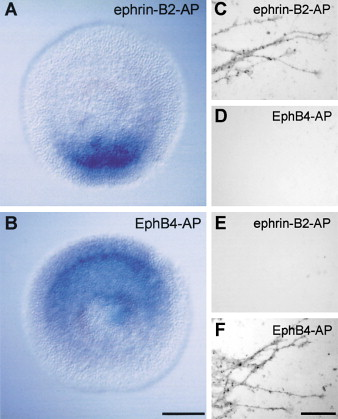
The growth cone integrates many signals
Axon guidance is not controlled by a single class of molecule.
The growth cone integrates multiple signals present in the extracellular environment.
Contact-dependent signals
- extracellular matrix adhesion
- cell-surface adhesion
- fasciculation
- contact-mediated repulsion
Diffusible signals
- chemoattraction
- chemorepulsion
The direction of growth reflects the combined effect of these signals on the growth-cone cytoskeleton.
Adhesion to the extracellular environment
Growing axons need a physical substrate on which the growth cone can attach and generate traction.
Extracellular matrix molecules such as laminin can provide a permissive substrate for axonal growth.
Cell-adhesion molecules such as NCAM can also promote interactions between neural cells.
Adhesion does more than attach the axon mechanically.
Binding to extracellular molecules activates intracellular pathways that influence growth-cone movement.
Fasciculation: axons can follow other axons
A growing axon does not always navigate through tissue independently.
Axons can grow along previously established axons in a process called fasciculation.
Early pioneer axons can establish an initial route.
Later axons can recognize adhesion molecules on those axons and use the existing pathway as a developmental scaffold.
This greatly reduces the number of independent navigational decisions required to build a long axonal tract.
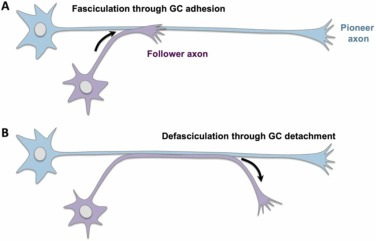
Diffusible guidance cues
Some guidance molecules are secreted into the extracellular environment and form concentration gradients.
The growth cone can compare signal strength across its surface and turn relative to the source.
Chemoattraction
The growth cone turns toward a source of guidance molecules.
Chemorepulsion
The growth cone turns away from a source of guidance molecules.
One important family of diffusible axon-guidance molecules is the netrin family.
Netrin and intermediate targets
Netrins can guide growing axons over a distance and are especially important at developmental choice points such as the neural midline.
The optic chiasm provides one example. Retinal axons reaching the midline must adopt either:
- a contralateral projection that crosses the midline
- an ipsilateral projection that avoids crossing
For some axons, netrin acts as an attractive cue that guides the growth cone toward an intermediate target. After reaching that region, the axon can change its molecular state and respond differently to subsequent cues.
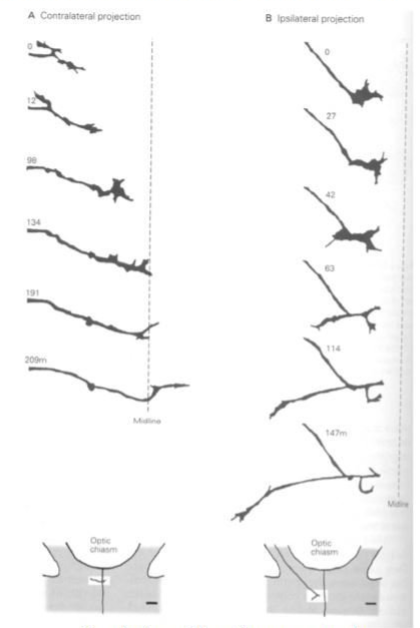
An intermediate target therefore does not have to be the final destination.
It can act as a navigation checkpoint.
Guidance depends on axonal competence
A guidance molecule is not intrinsically “attractive” or “repulsive” for every axon.
Its effect depends on the competence of the growth cone to interpret that signal.
The response depends on factors such as:
- which receptors are expressed
- the level of receptor expression
- intracellular signaling state
The same extracellular cue can therefore produce different responses in different axons or in the same axon at different stages of its journey.
As in cell differentiation, the signal matters, but so does the state of the responding cell.
Reaching the correct region is not enough
Axon guidance brings an axon into the correct target region.
But a neural circuit requires much greater precision.
The axon must still identify:
- the correct
target cell type - the correct
cell - often the correct
subcellular compartment - an appropriate location at which to assemble a functional synapse
This transition from axon guidance to synaptic recognition is the beginning of synaptogenesis.
Synaptogenesis
Synaptogenesis is the process by which neurons establish specialized communication sites with their target cells.
A developing synapse requires coordinated changes on both sides:
presynaptic terminal ↔︎ postsynaptic specialization
The process includes:
- target recognition
- stabilization of contact
- recruitment of presynaptic vesicles and release machinery
- clustering of postsynaptic receptors
- assembly of scaffolding and adhesion proteins
Image: stages of synapse formation from growth cone contact to mature synapse
Suggested file: images/3_ns_synapse_formation.png
Synapse formation is a coordinated process
When an axon contacts an appropriate target, signals pass in both directions across the developing contact.
Presynaptic side
- growth cone becomes a terminal
- synaptic vesicles accumulate
- active-zone proteins are recruited
- neurotransmitter release machinery is organized
Postsynaptic side
- receptors become concentrated
- scaffolding proteins accumulate
- the cytoskeleton is reorganized
- the membrane develops a specialized postsynaptic domain
Synaptogenesis therefore transforms an initially simple cell-cell contact into a specialized communication structure.
The neuromuscular junction as a model
The neuromuscular junction has been a particularly useful model for understanding how pre- and postsynaptic specializations become aligned.
The motor axon releases agrin, which activates signaling involving MuSK in the muscle membrane.
This promotes the clustering of acetylcholine receptors beneath the presynaptic terminal.
A diffuse receptor distribution is therefore reorganized into a highly localized postsynaptic specialization.
Image: agrin-MuSK pathway and clustering of acetylcholine receptors
Suggested file: images/3_ns_agrin_musk.png
Synaptic specificity
Neurons do not simply form synapses with any nearby cell.
Synaptogenesis is highly selective.
Specificity can occur at multiple levels:
brain region → cell type → individual neuron → subcellular compartment
The same postsynaptic neuron can receive different classes of inputs at distinct locations on its dendrites, soma or axon.
Connectivity is therefore not only a question of who connects to whom, but also where on the target cell the connection is made.
Subcellular target specificity
Different classes of inhibitory interneurons can preferentially innervate different compartments of the same pyramidal neuron.
Examples:
SST interneuronspreferentially target distal dendritic regions- many
PV interneuronspreferentially target the soma and proximal dendrites chandelier cellsselectively innervate the axon initial segment
This subcellular specificity gives different interneuron classes distinct effects on neuronal computation.
Image: pyramidal neuron showing dendritic, somatic and axon-initial-segment inhibitory inputs
Suggested file: images/3_ns_subcellular_specificity.png
Molecular cues can specify a synaptic location
Subcellular targeting can itself be guided by molecular information.
A classic example is the precise targeting of the axon initial segment of Purkinje cells by cerebellar basket-cell axons.
Molecules concentrated at particular neuronal compartments, including Neurofascin, can contribute to this highly specific organization.
The neuron therefore contains an internal molecular map that can help incoming axons identify the correct synaptic compartment.
Image: basket-cell/Purkinje-cell pinceau and Neurofascin at the AIS
Suggested file: images/3_ns_neurofascin_ais.png
Glia participate in synaptogenesis
Synapse formation is not exclusively a neuron-neuron process.
Astrocytes actively influence the formation and maturation of synapses.
Astrocytes release synaptogenic signals, including molecules such as thrombospondins, and regulate the extracellular environment around developing synapses.
The presence of glial signals can strongly increase the number of synaptic contacts formed by developing neurons.
Image: experimental comparison of neurons cultured with and without glial signals
Suggested file: images/3_ns_glia_synaptogenesis.png
Trans-synaptic adhesion organizes the contact
The developing pre- and postsynaptic membranes must become physically aligned and molecularly coordinated.
Trans-synaptic adhesion systems such as neurexins and neuroligins contribute to:
- stabilization of cell-cell contact
- alignment of pre- and postsynaptic specializations
- recruitment of synaptic proteins
- maturation of synaptic properties
These molecules act as part of a larger molecular network rather than as a single universal “synapse switch.”
Image: neurexin-neuroligin trans-synaptic complex
Suggested file: images/3_ns_neurexin_neuroligin.png
Early circuits contain excess connections
As with neuronal survival, development initially generates more connections than will ultimately be maintained.
Early synaptic organization can therefore be highly redundant.
A clear example is the developing neuromuscular junction, where an individual muscle fiber is initially innervated by multiple motor axons.
During maturation, most of these inputs are eliminated until each adult muscle fiber is normally innervated by a single motor neuron.
Image: transient polyneuronal innervation of muscle and mature single innervation
Suggested file: images/3_ns_polyinnervation.png
Synaptic competition and elimination
The transition from multiple inputs to a smaller set of stable connections is not random.
Developing inputs compete for maintenance.
Synaptic stabilization depends in part on:
- successful communication with the target
- relative activity of competing inputs
- trophic and molecular support
- local postsynaptic signaling
Less successful connections retract, while selected connections become stronger and more stable.
Image: competition between motor-neuron terminals and local receptor blockade
Suggested file: images/3_ns_synaptic_competition.png
Constructive and regressive processes shape circuits
Constructive processes
- axon extension
- axonal branching
- synapse formation
- dendritic growth
- addition of synaptic contacts
Regressive processes
- branch retraction
- synapse elimination
- pruning of inappropriate projections
- removal of redundant connections
As in neuronal survival, mature circuitry emerges through overproduction followed by selective stabilization and elimination.
Synaptic density changes during development
Synapse number is highly dynamic during brain development.
Periods of intense synaptogenesis can produce synaptic densities greater than those maintained in the mature brain.
This is followed by prolonged periods of synaptic pruning.
The timing differs across brain regions: primary sensory areas generally mature earlier, whereas association and prefrontal regions follow a more prolonged trajectory.
Image: developmental curve of synaptic density in sensory and prefrontal cortex
Suggested file: images/3_ns_synaptic_density.png
Circuit refinement is prolonged
The basic architecture of many circuits appears early, but connectivity continues to be modified for a long period after the first synapses are formed.
Circuit maturation includes:
formation → competition → stabilization → elimination → refinement
The relative contribution of genetically specified molecular signals and neural activity changes across development.
Early molecular programs provide substantial initial organization, while activity and experience progressively refine connectivity.
This interaction between initial wiring and experience will become central when we discuss developmental plasticity and critical periods.
Myelination
A circuit is not mature simply because its neurons are connected.
The timing and reliability of signal transmission also depend on the structural organization of axons.
Myelination surrounds selected axonal segments with a multilayered glial membrane.
In the CNS, myelin is produced by oligodendrocytes.
Myelination allows rapid saltatory conduction between the nodes of Ranvier and changes the functional properties of neural circuits.
Image: oligodendrocyte, myelin sheath and nodes of Ranvier
Suggested file: images/3_ns_myelin_overview.png
Oligodendrocytes and myelin
A single oligodendrocyte can extend multiple processes and form myelin around segments of several CNS axons.
Myelination can be considered in two broad developmental steps:
- proliferation and differentiation of oligodendrocyte-lineage cells
- recognition of appropriate axons and formation of compact myelin wraps
Myelin is therefore the product of an active axon-glia interaction.
Image: oligodendrocyte extending processes to several axons
Suggested file: images/3_ns_oligodendrocyte.png
Nodes of Ranvier are specialized domains
Myelination does not simply insulate an axon.
It reorganizes the axonal membrane into distinct molecular domains.
At the node of Ranvier, voltage-gated sodium channels are highly concentrated.
Adjacent regions contain different channel and adhesion complexes, including characteristic distributions of Nav and Kv channels.
The interaction between axons and myelinating glia therefore helps organize the molecular machinery required for saltatory conduction.
Image: node of Ranvier showing Nav, paranodal and Kv domains
Suggested file: images/3_ns_node_of_ranvier.png
Myelination has a long developmental trajectory
Human myelination begins prenatally but continues for many years after birth.
Different pathways and brain regions mature at different times.
The general developmental progression is from systems required for early sensorimotor function toward increasingly distributed and associative networks.
This prolonged trajectory means that important changes in the speed and coordination of neural communication continue through childhood, adolescence and into adulthood.
Image: timeline of human myelination from prenatal development to adulthood
Suggested file: images/3_ns_myelination_timeline.png
Myelination follows a regional sequence
Myelination does not progress uniformly across the nervous system.
Broad developmental tendencies include:
- earlier maturation of many sensory and subcortical pathways
- later maturation of long-range association pathways
- earlier maturation of posterior cortical systems relative to many frontotemporal association regions
The sequence broadly parallels the progressive maturation of increasingly complex neural functions.
Image: regional progression of human brain myelination
Suggested file: images/3_ns_regional_myelination.png
From neurons to functional circuits
Circuit development is a multistage process in which molecular specificity and selective refinement operate repeatedly.
axon guidance
Where should the axon go?
target recognition
Which cell should it contact?
synaptogenesis
Where and how should the synapse be assembled?
refinement
Which of the initial connections should be maintained?
myelination
How should signals be transmitted efficiently across the final circuit?
The mature circuit is therefore not simply “wired.”
It is progressively guided, assembled, tested, selected and optimized.
A general principle of neural development
Across the three chapters we repeatedly encounter the same developmental strategy.
Generation
- cells are produced
- axons are extended
- synapses are formed
Selection and refinement
- cell fates are restricted
- neurons compete for survival
- axons choose among possible routes
- synapses compete and are pruned
- myelination stabilizes efficient pathways
Development builds the nervous system through progressive specification followed by selective refinement.